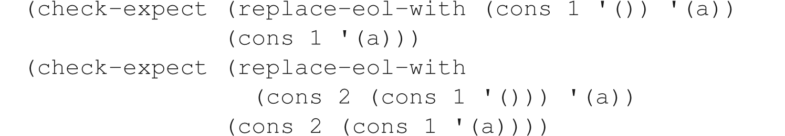
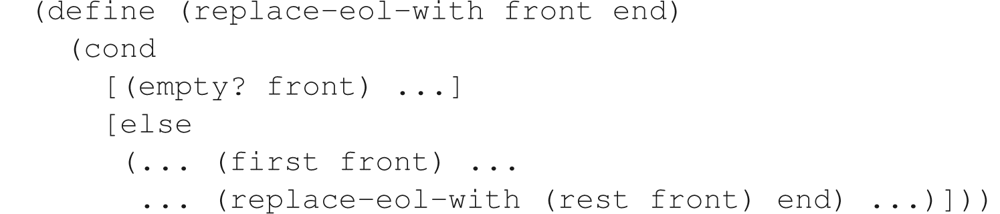
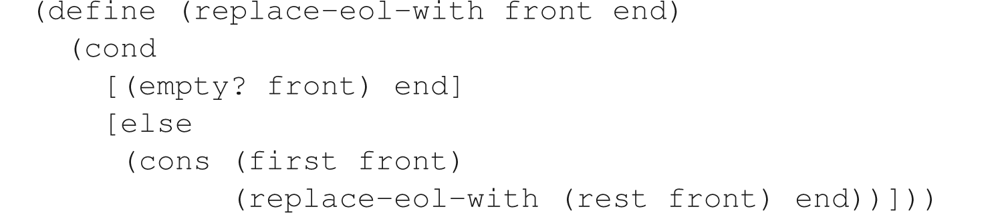

23.1 Processing Two Lists Simultaneously: Case 1
Consider the following signature, purpose statement, and header:
; [List-of Number] [List-of Number] -> [List-of Number]
; replaces the final '() in front with end
(define (replace-eol-with front end)
front)
The signature says that the function consumes two lists. Let’s see how the design recipe works in this case.
We start by working through examples. If the first argument is '(), replace-eol-with must produce the second one, no matter what it is:
(check-expect (replace-eol-with '() '(a b)) '(a b))
In contrast, if the first argument is not '(), the purpose statement requires that we replace '() at the end of front with end:

The purpose statement and the examples suggest that as long as the second argument is a list, the function does not need to know anything about it. By implication, its template should be that of a list-processing function with respect to the first argument:

Let’s fill the gaps in the template following the fifth step of the design recipe. If front is '(), replace-eol-with produces end. If front is not '(), we must recall what the template expressions compute:
• (first front) evaluates to the first item on the list, and
• (replace-eol-with (rest front) end) replaces the final '() in (rest front) with end.
Stop! Use the table method to understand what these bullets mean for the running example.
From here it is a small step to the complete definition:

Exercise 387. Design cross. The function consumes a list of symbols and a list of numbers and produces all possible ordered pairs of symbols and numbers. That is, when given '(a b c) and '(1 2), the expected result is '((a 1) (a 2) (b 1) (b 2) (c 1) (c 2)).